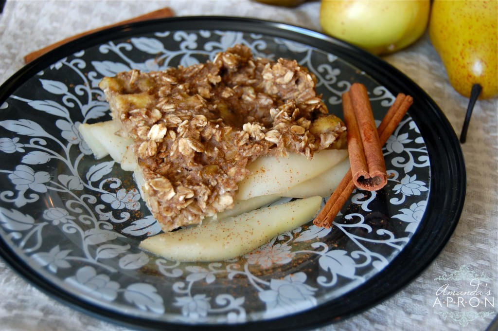

Ingredients:
3 ripe pears
2 very ripe bananas (the more brown the better!)
1 Cup of Oats
1T grated ginger OR 1/2t ground ginger (Use fresh ginger if you can.)
1t ground cinnamon
Directions:
- First, preheat your oven to 350.
- Peel the pears and slice them very thin – but thicker than paper thin.
- Lightly spray an 8×8 or 9×9 dish with oil and line the pear slices inside.
- Atop the pears, grate about a thumb sized nub of fresh ginger root. (If you’re using ground ginger, skip the grating step and save the
ground ginger for later.
- Next, mash the banana, cinnamon, ground ginger if using, and oats together with a fork or potato masher. Add the oats in 1/2 a cup
at a time to make the mashing easier.
- Make sure all the oats are covered so they don’t dry out.
- Place this mixture atop the pears.
- spread it atop evenly,
- Bake at 350 for 20-25 minutes.
Recipe Source: Amanda's Apron